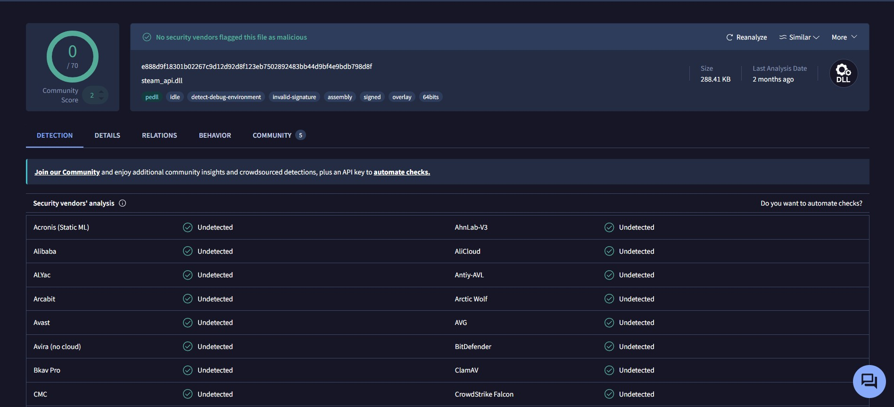
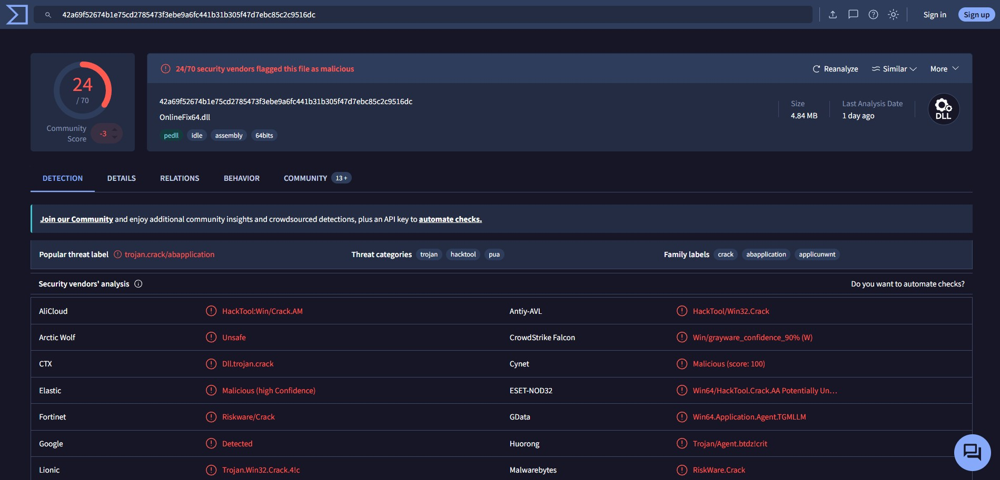

الرجوع للرئيسية
تحقيق أمني مستقل
التقرير الكامل: ماذا تخفي أدوات ستيم المجانية؟
تحليل برمجي متعمق لـ SteamTools v1.8.30 – تم فك جميع الملفات، تتبع مسارات الشبكة، وتحليل قاعدة البيانات. هذي الصفحة تلخّص 26 قسم من التقرير الكامل على GitHub.
ليش حللنا البرنامج؟
البداية كانت من منشورات فيسبوكية وأشخاص يشتكون من أن حسابات ستيم نهبوا واخترقت بعد استخدام أدوات مجانية. كثير ناس فقدوا مكتبات ألعاب كاملة بنيت على مدار سنين — مئات الدولارات ضاعت في ثواني.
هنا قررنا نفتح  SteamTools (الإصدار 1.8.30) ونتعمق في الكود المصدري: وش بالضبط يشتغل داخل جهاز الضحية؟ هل هو مجرد أداة فتح ألعاب، ولا فيه شي أسوأ؟
SteamTools (الإصدار 1.8.30) ونتعمق في الكود المصدري: وش بالضبط يشتغل داخل جهاز الضحية؟ هل هو مجرد أداة فتح ألعاب، ولا فيه شي أسوأ؟
"في ثواني معدودة، لقينا شي ما توقعناه — باب خلفي كامل يسمح لمطوري الأداة بتحميل أي فيروس يبغونه على جهاز الضحية في أي لحظة."
التحليل استغرق أياماً من فحص الملفات، تفكيك الكود، تتبع مسارات الشبكة، وتحليل قواعد البيانات المخفية. النتيجة مو توقعات — إنها حقائق مثبتة من الكود نفسه، منشورة على GitHub مع جميع الملفات والتوقيعات والتجزئة (SHA-256).
الفرق الجوهري
HANZO2TEAM لا يحقن ملفات — يعترض اتصال ستيم
SteamTools, Project-Lightning و Lua Tool: تحقن ملفات .dll و .exe داخل ذاكرة الألعاب. الملفات تجري داخل برنامج اللعبة بصلاحيات كاملة وتقدر تسوي أي شي.
HANZO2TEAM: ما يحقن أي ملف في اللعبة أبداً. يعترض اتصال ستيم نفسه على مستوى النظام — يوجّه طلبات الشبكة بس بدون ما يلمس ذاكرة اللعبة أو ملفاتها.
Project-Lightning و Lua Tool
هذول مو أدوات جديدة — Project-Lightning و Lua Tool مبنيين كلياً على نفس ملفات SteamTools. الفرق الوحيد: واجهة مختلفة، بس تحت الغطاء نفس الكود، نفس Core.dll، ونفس HttpLoadDLL.
ملفات الإنجكشن نفسها نسخ طبق الأصل — بعضها بنفس التوقيع الرقمي، وبعضها بدون توقيع.
موقع خطر
Online-Fix.me ليس آمناً
موقع روسي يقدّم "فكسات" لتشغيل الألعاب المخترقة أونلاين. يدّعي الأمان — لكن تحليل VirusTotal يكشف الحقيقة.
موقع "آمن" — تحليل VirusTotal
موقع Online-Fix.me موقع روسي يقدّم "فكسات" (fixes) تسمح بلعب الألعاب المخترقة أونلاين مع الآخرين — يعني يخترق الحماية الجماعية متعددة اللاعبين. يدّعي أنه آمن، لكن التحليل يكشف غير ذلك.
نمط الكشف نموذجي لأدوات الكراك/التفعيل المزوّرة — التصنيفات Crack HackTool ABApplication ApplicUnwnt PUA كلها إشارات على أن هذا برنامج "تفعيل/كسر حماية" غير رسمي، وهذا النوع غالباً ما يكون مرفقاً ببرمجيات ضارة إضافية.
نتائج التحليل (~20 محرك من أصل 70 يصنفونه كخطر):
| محرك الكشف | التصنيف | نسبة الثقة |
|---|
| Cynet | Malicious | 100% |
| Elastic | Malicious | عالية جداً |
| CrowdStrike Falcon | Grayware | 90% |
| SentinelOne | مشبوه (AI) | تحليل ذكاء اصطناعي |
| Skyhigh | Dropper | سلوك تنزيل ملفات |
مؤشر Dropper مقلق جداً — يعني الملف ينزّل حمولة إضافية بعد التشغيل. هذا سلوك شائع في أدوات الكراك المزيفة المستخدمة لتوزيع برمجيات تجسس أو فدية.
ملاحظة مهمة: عدم كشف المحركات الكبرى (Microsoft, Kaspersky, BitDefender) لا يعني الأمان — أدوات الكراك تصمَّم عمداً لتفادي هذه المحركات تحديداً، أو أن الشركات الكبرى تتساهل أحياناً مع "Riskware" العام.
مقارنة مع HANZO2TEAM: برنامجنا لم يتم رصده أبداً في أي فحص VirusTotal — 0 كشف، 0 اكتشاف، 0 تصنيف. ليس لأننا نختبئ، بل لأن محتويات الملفات نظيفة بالكامل. لا أكواد حقن، لا بابات خلفية، لا تشفير خبيث، لا Dropper. الفرق بين النظافة الحقيقية والتضليل.
الخلاصة: Online-Fix.me ليس موقعاً آمناً — إنه منصة لتوزيع كراكات تخترق خاصية تعدد اللاعبين في ستيم، مع مؤشرات Dropper و Malicious من محركات متخصصة. أي ملف تحمّله منه يحمل خطر سرقة حسابك أو اختراق جهازك.
سؤال منطقي
طيب، ليش الملف ما يجي كامل وجاهز من أول يوم؟
لو كان هدف Online-Fix هو مساعدتك على اللعب أونلاين فقط، ليه يحتاج تحميل ملفات إضافية من السيرفر بعد التثبيت؟ ليه ما تضمّن كل شي في المثبّت وقدّمه لك مرة واحدة؟
"لأن الملف اللي يعطيك إياه اليوم مو لازم يكون نفس الملف اللي يشتغل بكره."
لو النية نظيفة، كان الملف يجي كامل ومتكامل منذ البداية. لكن النظام المعتمد على تحميل ملفات إضافية بعد التشغيل (Dropper) ما له أي فائدة إلا شي واحد: التحكم عن بُعد. المطور يبقي السيرفر تحت سيطرته عشان يقدر:
• يغيّر اللي يشتغل على جهازك في أي لحظة
• يضيف وظائف خبيثة بعد ما تثق في البرنامج
• يتجاوز برامج الحماية لأن الملفات جديدة وما شافتها التحليلات
• يوزع حمولات مختلفة لأشخاص مختلفين (فيروس فدية لشخص، متصيد عملات لآخر)
الخلاصة المنطقية: لو كان موقع Online-Fix نظيفاً، ما كان يحتاج نظام Dropper أساساً. الملف النظيف يُعطى كامل جاهز — والملف اللي يحتاج ينزّل أجزاء من السيرفر يخبّي شي.
خطر مميت
HttpLoadDLL — الباب الخلفي في SteamTools
في قلب Core.dll، وجدنا دالة اسمها HttpLoadDLL:
• تطلب ملف DLL من سيرفر صيني
• تفك تشفيره — الملف يصل مشفر عشان ما ينكشف
• تحمّله في ذاكرة جهازك عبر LoadLibraryA
• تشغّله عبر GetProcAddress — أي كود يبغونه
المطور يقدر يرسل فيروس فدية، متصيد عملات، برنامج تجسس — أي شي. النصوص المضمنة في الكود تؤكد:
"HttpLoadDLL called", "Downloaded and decrypted data successfully", "FileName", "Hash", "package/branch", "WindowsFile64".
اضغط على أي قسم لتوسيعه وعرض التفاصيل الكاملة
الملفات اللي يسقطها المثبّت
18 ملفاً في 4 مجلدات — 10.6 ميغابايت
المثبّت st-setup-1.8.30.exe (NSIS 3 Unicode) يسقط الملفات التالية:
| الملف | الحجم | الغرض |
|---|
SteamTools.exe | 1.83 MB | البرنامج الرئيسي غير موقَّع |
Core.dll | 658 KB | المحرك الخطير — باب خلفي، تشفير، شبكة |
Qt5Core.dll | 6 MB | إطار كيو تي — مكتبة عمرها 5+ سنوات |
Qt5Gui.dll | 7 MB | واجهات كيو تي |
Qt5Widgets.dll | 5.5 MB | أدوات واجهة كيو تي |
Qt5Network.dll | 1.3 MB | شبكات كيو تي |
Qt5Svg.dll | 330 KB | رسومات SVG |
msvcp140.dll و 3 ملفات أخرى | ~787 KB | مكتبات سي++ من 2025 |
qwindows.dll | 1.4 MB | إضافة نافذة كيو تي |
qico.dll | 38 KB | إضافة أيقونات |
ملاحظة: مكتبات Qt5 من نوفمبر 2020 — فيها ثغرات أمنية معروفة (CVEs) غير مصحّحة. الملف الوحيد الموقَّع بشهادة EV هو Core.dll — الـ EXE الرئيسي غير موقَّع.
التوقيع الرقمي — شهادة EV مخادعة
GlobalSign EV Code Signing — NewWnight Global Tech Co., Ltd
المثبّت و Core.dll موقَّعان بشهادة Extended Validation (EV) من GlobalSign — أغلى وأوثق نوعية شهادات. الشركة المصدرة:
- الاسم: NewWnight Global Tech Co., Ltd
- الموقع: Changsha, Hunan, China
- السجل التجاري: 91430103MADWKFRYXD
- صلاحية الشهادة: ديسمبر 2025 – ديسمبر 2026
تنبيه: الـ EXE الرئيسي غير موقَّع — يقدر يتغير بأي وقت بدون ما تنكسر الشهادة. الشركة "NewWnight" ما عندها وجود ويب فعلي، وتظهر أنها أُنشئت خصيصاً لهذه الأداة.
خداع "Vale Corporation"
انتحال هوية Valve — حرف واحد ناقص
في خصائص Core.dll: Company Name = "Vale Corporation"، Product Name = "Vale" — بينما الشركة الحقيقية هي Valve. الفرق: حرف V الثاني ناقص (Valve → Vale).
- الهدف: خداع المختصين — يبدو كأنه توقيع Valve الرسمي
- الخدعة: توفر "إنكار معقول" — "لا مو Valve، هذي Vale"
- التدليس متعمَّد — اسم الشركة الحقيقي في الشهادة NewWnight، مو Vale
كمان Core.dll يسجل نفسه في النظام باسم "Vale Corporation" وينتحل قنوات IPC باسم Valve_SteamIPC_Class.
سرقة بيانات حسابات ستيم
قراءة loginusers.vdf — كل الحسابات المسجلة بالجهاز
البرنامج يقرأ ملفات ستيم التالية بدون علم المستخدم:
- loginusers.vdf — أسماء المستخدمين، SteamID، حالة "تذكرني" لـ كل الحسابات اللي دخلت على الجهاز
- localconfig.vdf — إعدادات الحساب، قائمة الأصدقاء، خيارات التشغيل
Core.dll يحتوي مكتبة libcurl كاملة مع دعم multipart/form-data، CURLOPT_POSTFIELDS، CURLOPT_UPLOAD — عنده القدرة التقنية الكاملة لرفع بياناتك لأي سيرفر. خطر تسريب
خوادم التحديث — شبكة خطيرة
3 سيرفرات — 2 منها HTTP غير مشفر
| السيرفر | البروتوكول | الغرض |
|---|
update.tnkjmec.com | HTTPS | خادم أساسي |
update.wudrm.com | HTTP | خادم احتياطي — IP صيني 43.174.246.23 |
update.steamcdn.com | HTTP | ينتحل steamcdn.com الرسمي |
update.steamcdn.com ينتحل اسم خادم ستيم الرسمي عشان يتجاوز جدران الحماية ويضلل المختصين. update.wudrm.com يستخدم HTTP غير مشفر — أي هاكر على نفس الشبكة يقدر يحقن فيروسات.
قاعدة بيانات القرصنة — appids.db
تذاكر مزورة، مفاتيح فك تشفير، PIN العائلة
هيكل قاعدة البيانات:
CREATE TABLE Appinfo (appid INTEGER PRIMARY KEY, tickets BLOB, type INTEGER, stubdrm INTEGER, DecryptionKey TEXT(64, 64));
- appid — معرف اللعبة في ستيم
- tickets — تذاكر ملكية مزورة (تذاكر دخول)
- stubdrm — نوع DRM اللي يتجاوزه
- DecryptionKey — مفتاح AES لفك تشفير محتوى اللعبة
- Family View PIN — استخراج رقم PIN الحماية العائلية (
"Retrieving Family View PIN for %1...")
انتحال IPC — التنكر كهوية ستيم
SteamTools يتظاهر بأنه ستيم الرسمي
قنوات IPC (Inter-Process Communication) اللي ينشئها البرنامج:
Global_SteamtoolsIPC_Class — قناة SteamTools الداخليةGlobal\Valve_SteamIPC_Class — ينتحل قناة Valve الرسمية 🛑Global_UnlockedIPC_Class — يرسل إشارة "مفكوك" للألعاب
الألعاب تتواصل مع ستيم عشان تتأكد من الملكية. SteamTools يعترض هذا الاتصال ويرد: "المستخدم يملك كل شي". خداع الألعاب
نظام Lua — سطح هجوم قابل للتوسع
سكربتات Lua تتحمّل من السيرفر وتنفّذ
البرنامج يضم محرك Lua كامل:
- الملفات:
config\stplug-in\Steamtools.lua و luapacka.exe
- يقدر يحمل سكربتات من السيرفر وينفذها
- السكربتات لها صلاحيات ملفات، شبكة، وريجيستري
- منطقة قابلة للاستغلال — أي مطور ضار يوزع سكربت Lua يخترق الجهاز
واجهات Windows API الخطيرة
صلاحيات كاملة للذاكرة، العمليات، والمجلدات
| API | الوظيفة | الخطر |
|---|
VirtualProtect | يغير صلاحيات الذاكرة | حقن كود |
VirtualAlloc | يخصص ذاكرة | تنفيذ كود |
LoadLibraryA | يحمل DLL | تحميل الباب الخلفي |
CreateToolhelp32Snapshot | يفحص كل العمليات | تجسس |
SuspendThread / ResumeThread | يوقف/يكمل threads | تلاعب بالعمليات |
SetThreadContext | يعدل سجلات المعالج | حقن كود متقدم |
IsDebuggerPresent | يكشف المحللين | تجنب الرقابة |
CreateProcessW | يشغل برامج | تشغيل فيروسات |
هذي APIs مو طبيعية لأداة "فتح ألعاب" — هذه أدوات هندسة اجتماعية واختراق.
مراحل الهجوم الكاملة
7 مراحل — من التثبيت إلى سرقة البيانات وتشغيل الباب الخلفي
المرحلة 1 — التثبيت: NSIS installer يفك 18 ملفاً. الشهادة EV تجعل ويندوز وبرامج الحماية تثق به.
المرحلة 2 — التشغيل: SteamTools.exe يشغّل Core.dll — محرك التشفير وlibcurl.
المرحلة 3 — كشف ستيم: يقرأ الريجيستري ويتتبع مسار ستيم.
المرحلة 4 — سرقة بيانات: يقرأ loginusers.vdf و localconfig.vdf (أسماء مستخدمين، SteamID، حالة تذكرني).
المرحلة 5 — الباب الخلفي: يتصل بخوادم التحديث و HttpLoadDLL يجهّز لتحميل أي كود.
المرحلة 6 — انتحال IPC: يتنكر كهوية ستيم ويخدع الألعاب.
المرحلة 7 — القرصنة: يفتح قاعدة البيانات، يولّد تذاكر مزورة، يفك تشفير الألعاب.
قدرات التشفير
AES-128/192/256، RSA، Windows CryptoAPI
Core.dll يضم مكتبة تشفير كاملة:
- AES-128/192/256 — تشفير ملفات التحميل من السيرفر
- RSA — توثيق الاتصالات
- Windows CryptoAPI — يدير المفاتيح والشهادات
- libcurl مع SSL/TLS — يدعم اتصالات آمنة لكنه يستخدم HTTP للخوادم الثانوية
الملفات تصل مشفرة — حتى لو راقبت الشبكة ما تقدر تشوف المحتوى.
النطاقات والبنية التحتية
steamtools.net، bbs.steamtools.net، steamtoos.net، steamui.com
| النطاق | الاستخدام |
|---|
steamtools.net | الموقع الرسمي — خلف Cloudflare |
bbs.steamtools.net | المنتدى |
steamtoos.net | نطاق بديل — حرف L ناقص (typosquatting) |
steamui.com | مصدر واجهات أو تصيد؟ |
steamdb.info | موقع ستيم الخارجي — استعلام بيانات الألعاب |
store.steampowered.com | متجر ستيم الرسمي |
الموقع الرسمي خلف Cloudflare (104.26.5.149, 104.26.4.149) — يخفي عنوان السيرفر الحقيقي.
بصمات الملفات (SHA-256)
التجزئة المشفرة للتحقق من الملفات
- المثبّت:
41EC92BC311DAF40B22B2497D044B12D9BA0266DA84D8581255D7CC9E059135F
- SteamTools.exe:
992D547BBF83F26F3117B27AAA2A2E2E665F76658B67C27E84B13DC379833EAA
- Core.dll:
0EFD139F4201AEA356B6BADDB159534BADFEB388BB7DD54EE9D614F166CC64A2
تقدر تتأكد بنفسك: قارن الهاش مع الملف اللي عندك.
التقييم النهائي للمخاطر
مستوى التهديد: عالٍ جداً — باب خلفي، سرقة، قرصنة
| الخطر | المستوى |
|---|
| باب خلفي (HttpLoadDLL) | مميت |
| سرقة حسابات ستيم | مميت |
| تحميل فيروسات فدية | مميت |
| انتحال Valve | عالي |
| تحديثات HTTP مكشوفة | عالي |
| تعدين العملات | متوسط |
| حظر حساب ستيم | متوسط |
الخلاصة: هذا مو مجرد أداة قرصنة — هذي بوابة خلفية متكاملة تحت سيطر كاملة لمطوريها. لا تثق فيها لحماية جهازك أو حسابك.
بعض الناس يصرّون على تدمير أجهزتهم بأنفسهم — هذي أعذارهم المفضلة:
"برامج الحماية ما كشفتها، يعني آمنة"
أغبى عذر ممكن تسمعه — وإليك почему
برامج الحماية (Antivirus) ليست ذكية بالقدر اللي تتصوره. أدوات الكراك والهاك تصمَّم خصيصاً عشان تتفادى برامج الحماية. إذا كان برنامج مكتوب عشان يخترق ألعاب، أكيد كاتبه يعرف كيف يتجنب Windows Defender.
بعدين، الباب الخلفي HttpLoadDLL ينزّل ملفات مشفرة — برنامج الحماية ما يقدر يفحص ملف مشفر لأنه ببساطة ما يعرف وش داخله لين يفك تشفيره. وفي هذي اللحظة يكون الأوان فات.
وبرضه: الـ EXE الرئيسي مو موقّع 👈 شلون برنامج الحماية يثق فيه؟ الثقة من الشهادة الرقمية مو من الكود.
"أنا استخدمها من سنة وما صار لي شي"
مبروك — أنت في مرحلة الطعم الحي
هذا أكثر عذر سمعناه. طيب، فكر:
• الـ HttpLoadDLL موجود من أول يوم، شغال وجاهز
• السيرفر الصيني اللي يتحكم فيه المطور شغال
• كل اللي يحتاجه المطور: يضغط زر عشان يحول كل الأجهزة اللي منصّب عليها البرنامج إلى شبكة بوت نت (Botnet) أو يرسل لها فدية
انتظرت للسنة هذي؟ استنى للسنتين الجاية. السرقة مو لازم تجي اليوم — تجي لين يقرر المطور إنه حان وقت الحصاد.
"ما صار لي شي" مو دليل أمان — هو دليل إنك لسه ما صرت الهدف. الباب الخلفي مو شرط يشتغل اليوم. المشكلة إنه يقدر يشتغل أي يوم.
"ملايين الناس يستخدمونها، مو معقول كلهم غلطانين"
ملايين الناس كانوا يدخنون وهم يعرفون إنه سرطان
العدد ما يحدد الصح من الغلط. الملايين يستخدمون فيسبوك وبرغم ذلك فيسبوك يبيع بياناتك. الملايين ركبوا تطبيقات خبيثة من Google Play قبل ما تنكشف.
الإقبال الجماعي ليس دليلاً على الأمان. المطور يبني ثقة عبر الأعداد، وبعدين يستغلها. كل الضحايا اللي فقدوا حساباتهم كانوا يقولون "مو معقول كلهم غلطانين" قبل ما يفيقون على حسابات مسروقة.
التفكير الجماعي ما يصنع أمان — يصنع قطيعاً. هل تفضل تكون في القطيع وتنتظر دورك، أو تكون واعي ومحمي؟
"هي مجرد أداة فتح ألعاب — مو فيروس!"
السيارة المفخخة ما تطلع من المصنع وهي مفخخة
طيب، إذا كانت مجرد أداة فتح ألعاب، ليه تحتوي على HttpLoadDLL؟ ليه تقرأ loginusers.vdf؟ ليه تتنكر كهوية Valve؟ ليه تحتوي على محرك Lua؟ ليه تستخدم APIs حقن كود؟
شوف — الملفات الخبيثة الحقيقية ما تبدأ كفيروسات. تبدأ كأدوات مفيدة تكسب ثقتك، وبعدين تستغل هالثقة. هذي الاستراتيجية اسمها "Trojan" — حصان طروادة. والاسم مو من فراغ.
"المبرمج قال أنها آمنة"
طبعاً راح يقول لك آمنة — على الأقل لين تنتهي فترة جمع البيانات
مطور الأداة يقول إنها آمنة؟ وانت صدّقته؟ في عالم الأمن السيبراني، لا تثق أبداً في المطور — ثق في الكود. الكود لا يكذب. الكود يا يكون فيه باب خلفي يا لا. وكل الأدوات اللي حللناها — SteamTools, Project-Lightning, Lua Tool, Online-Fix — فيها أثبات ملموسة على وجود أختراق.
لما شخص يقول "برنامجي آمن" وتسأله عن الكود وما يجاوب، أو يقول "هذا كود مفتوح" ويعطيك ملفات ومبنيّة ومشفّرة — هذا احتيال.
"إذا صار شي، أعمل فورمات — خلاص"
شجاعة الجهل — تنسى إن الحساب ما يتفورمات
تمام، الفورمات يرجع جهازك نظيف — ماذا عن حساب ستيم؟ إذا الفايروس سرق حسابك وغيّر الإيميل والباسورد، الفورمات ما يرجع لك الحساب. ستيم ما عنده "فورمات". الحساب يروح للأبد مع كل الألعاب اللي اشتريتها.
وبعدين: الفورمات ما يضمن إن الملفات الخبيثة ما نسخت نفسها في أقسام مخفية أو في الـ BIOS. الفورمات السطحي (Quick Format) ما يمسح كل شي. والفورمات العميق يمسح كل بياناتك الشخصية — صور، ملفات، مشاريع.
هل فعلاً مستعد تخسر كل هالشي عشان لعبة وحدة؟
"ما عندي فلوس أشتري الألعاب — مضطر"
الاضطرار ما يبرر المخاطرة
فهمتك — الألعاب غالية. لكن:
• إذا البرنامج المجاني سرق حسابك: تخسر كل الألعاب اللي عندك
• إذا زرع فيروس فدية: تخسر كل ملفاتك وتدفع فدية
• إذا زرع متصيد عملات: جهازك يشتغل 24 ساعة بدون ما تدري وفاتورة الكهرباء تزيد
الحل مو في أداة مجانية تخترق جهازك — الحل في HANZO2TEAM. مرة واحدة تدفع 10,000 دينار مدى الحياة، ضد خسارة آلاف الدولارات من المكتبة والأجهزة. احسبها صح.
"غيري يستخدمها وما فيهم شي — أنا زيهم"
قطيع يقود قطيعاً إلى الهاوية
ترى "غيري يشتغل بها" ما كانت أبداً حجة منطقية. يعني لو غيرك نط من جسر، بتقفز وراه؟
هذه الأدوات تشبه الروليت الروسي: بعض الناس يطلقون ويطلعون أحياء، بس هالشي ما يخلي اللعبة آمنة. كل يوم شخص يفيق على حساب مسروق ويسأل "ليش أنا؟!" — الجواب: لأنك خاطرت.
في النهاية، القرار قرارك. الجهاز جهازك، والحساب حسابك. احنا فقط حذرناك.
"حملته ومسحته بعدين — خلاص اختفى"
لا يا ذكي، ما اختفى
الملفات الخبيثة ما تمسح نفسها بنفسها. كثير من أدوات الكراك تزرع Bootkit أو Rootkit في أقسام مخفية من القرص الصلب. حتى لو سويت Uninstall، يبقى الأثر.
بعضها يحقن نفسه في Windows System Restore أو في الـ Registry. تحذف البرنامج وتعتقد انتهى — لا، هو ساكن عندك ومستعد يشتغل أي وقت.
وفوق هذا: HttpLoadDLL ما يحتاج يكون الموجود على جهازك عشان يشتغل. يكبر ملف صغير يشتغل في الخلفية، وبعد ما ينزّل الحمولة من السيرفر، يمسح نفسه. ترضى بهالعقلية؟
"أنا ما عندي شي يسرقونه — حسابي فاضي"
الغبي يعتقد إن الفيروسات تطارد الحسابات الفاضية فقط
المُخترِق ما يسرق حسابك عشان ألعابك — يستخدمه عشان ينصب على غيرك. حسابك (حتى لو فاضي) يصير أداة:
• يرسل روابط تصيد (Phishing) لأصدقائك
• يوزع ملفات خبيثة في مجموعات ستيم
• ينشر أخبار كاذبة أو ترويج لمنتجات غير قانونية
• يستخدمه كـ "حساب وهمي" للتهرب من الرقابة
سمعت عن **Steam Community Ban**؟ حسابك (الفاضي) لو استُخدم في إرسال سبام، يتقفل نهائياً مع كل الألعاب المستقبلية اللي ممكن تشتريها. حساب فاضي اليوم = حساب مسروق بكره = سمعة مدمرة للأبد.
"الكود مفتوح المصدر — أقدر أتأكد بنفسي"
بالتأكيد — خلنا نشوفك تفك 600 ألف سطر كود
مصطلح "مفتوح المصدر" يضلّل ناس كثير. كود مفتوح معناه إن الكود المصدري منشور. لكن هل فعلاً فحصته؟ هل تقدر تقرأ C++ وتفهم مكتبات libcurl و Windows API؟
حتى لو الكود منشور، الملفات اللي تتحمّل من السيرفر مو مفتوحة. الملفات المشفرة اللي تنزل عبر HttpLoadDLL ما تشوف كودها أبداً. مفتوح المصدر يخبّي باب خلفي مشفر؟ إذا الكود مفتوح فعلاً، ليش التشفير؟ ليش التحميل عن بُعد؟
الخلاصة: "مفتوح المصدر" في يد غبي = نافذة جميلة على سجن رقمي.
"أنا مبرمج وأعرف وش أسوي — أعرف أحمي نفسي"
أكبر المبرمجين يقعون في فخاخ التصيد — وأنت وش دخلك؟
سمعت عن SolarWinds Hack؟ شركة برمجيات كاملة اخترقت لأن موظف استخدم كود من مصدر غير موثوق. سمعت عن GitHub Supply Chain Attacks؟ مبرمجين محترفين يصدّرون مكتبات فيها أبواب خلفية بدون ما يدري أحد.
أنت كـ "مبرمج" — هل حللت الـ Core.dll بنفسك؟ هل فككت تشفير HttpLoadDLL؟ هل تتبعت كل دالة في Lua Engine؟ لا. أنت فقط تظن إنك محمي لأنك تعرف تسوي Hello World بلغة JavaScript. الأمن السيبراني علم قائم بذاته، مو حشو كبني.
الخبر السيئ: الثقة الزائدة هي أكبر نقطة ضعف. الهاكرز يعتمدون عليها.
"أشغّله في Sandbox / VM — ما يضرني"
الـ Sandbox ما يحمي حساب ستيم اللي خارج الصندوق
لنفترض إنك شغّلت الأداة في Sandbox وعزلتها عن جهازك. ممتاز. بس ستيم اللي شغال على جهازك الأصلي؟ حسابك الحقيقي؟ Sandbox ما يعزله. البرنامج يقرأ loginusers.vdf حق ستيم الحقيقي من الـ Registry.
ولو الأداة محتاجة تتصل بستيم (وهي أداة ألعاب)، فـ Sandbox يكون موصل بالشبكة — وأي باب خلفي داخل Sandbox يقدر يرسل بياناتك للسيرفر. Sandbox مو درع سحري. الفكرة الأساسية: إذا شغّلت أداة خبيثة، Sandbox يقلل الضرر لكن ما يمنعه تماماً.
"أنا أستخدم VPN — يخفي هويتي"
إخفاء الهوية من ستيم ما يمنع الفيروس من سرقة حسابك
وجهك مسكر، بس باب البيت مفتوح. الـ VPN يخفي عنوان IP حقك — ممتاز. لكنه ما يمنع HttpLoadDLL من تنزيل ملف خبيث. ما يمنع قراءة loginusers.vdf. ما يمنع الباب الخلفي من فتح اتصال بالسيرفر الصيني.
الـ VPN مثل وضع نظارة سوداء — أحد ما يشوف عيونك، لكن سيارتك تمشي في اتجاه الجدار والاصطدام راح يصير. هل الـ VPN راح يمنع الاصطدام؟ لا.
النقطة: التركيز على VPN ونسيان HttpLoadDLL مثل تنظيف مقبض الباب والنار مشتعلة في المطبخ.
"أكثر واحد يتكلم عن الأمان هو صاحب HANZO2TEAM — أكيد يبي يبيع"
أيوه، أكيد — وكل الأطباء اللي يحذرون من التدخين عندهم مصلحة في بيع الدواء
حجة كلاسيكية: "أنت تبي تبيعني شي، فما أثق في كلامك." — طيب، وش دخل تحليل GitHub المستقل؟ رابط التحليل في أسفل الصفحة — مستقل، مو تابع لنا، ولا له علاقة ببيع أي منتج. روح اقرأه بنفسك. كل ملفات SteamTools منشورة هناك مع هاشات SHA-256 تقدر تتأكد منها.
ثانياً: نحن لا نكسب شيئاً من تحذيرك من SteamTools و Online-Fix ومنتجاتها. لو تروح لأداة مجانية وتتضرر، ما نستفيد. نحن فقط نشرنا تحليلاً أمنياً — اللي عنده عقل يستفيد، واللي عنده عناد مستحكم يروح يخرب جهازه ويجي يندب.
النهاية: مو كل واحد يحذرك "يبي يبيعك" — أحياناً يحذرك عشان شفقة. والشفقة هذي مرة وحدة — الباقي على مسؤوليتك.
"يا عمي الحياة مخاطر — إذا خفت ما لعبت"
الموت في لعبة Battle Royale يختلف عن موت حسابك الحقيقي
ها، حجة "الرجال" — تتصوّر إن تحميل أداة مجانية يخليك جريء؟ الغباء ليس شجاعة. الفرق بينك وبين شخص يلعب روليت روسي: لعبة الروليت تلعبها مرة. هالأداة تلعبها كل يوم. كل ما تشغّلها، تدور لك على رصاصة.
الحياة فيها مخاطر، صح. لكن المخاطر العقلانية تختلف عن المخاطر الغبية. الفرق: ركوب السيارة فيه خطر — لكنه خطر محسوب. تحميل أداة فيها باب خلفي صيني؟ هذا مو خطر — هذا انتحار مبرمج. لا تخلط بين الشجاعة والحماقة — الفرق واضح لكل من عنده ذرة عقل.
"هذا الكلام كله نظريات مؤامرة — أنت جبان"
نظريات مؤامرة؟ إذن روح حلّل الكود بنفسك
كل شي قلناه في هالصفحة موجود في الكود. مبني على تحليل ثابت (Static Analysis) لكل ملفات SteamTools. الـ HttpLoadDLL حقيقة تقنية — مو "نظرية". ملفات الـ DLL المشفرة حقيقة. خوادم HTTP المكشوفة حقيقة. سرقة loginusers.vdf حقيقة.
أنت تسميها نظرية مؤامرة لأنك تخاف تواجه الحقيقة. لأنك عارف إنك استخدمت الأداة وحاسّ إنك غلطان. بدل ما تعترف، تطلق تهم "نظريات مؤامرة" عشان تحسّن صورتك قدام نفسك. هذا إنكار نفسي، مو تفكير نقدي.
الحقيقة: الرابط تحت في GitHub — روح اقرأ. ولا تبقى جبان وتتهرب.
"طيب أنا نزلتها من موقع موثوق — مو مثل موقعك"
المواقع "الموثوقة" عند الجهال = مواقع قرصنة
ها، "موقع موثوق" — شكله بايدك. طيب، عرّف "موثوق":
• موقع رسمي لشركة معروفة؟ لا
• موقع عليه حماية SSL فقط؟ أي موقع مسروق عنده SSL
• موقع عليه تعليقات إيجابية؟ التعليقات مزيفة بدرهم
• موقع منتشر في قروبات التليجرام؟ نفس قروبات الاختراق
أنت تزور موقع قرصنة وتسميه "موثوق"؟ هذا مثل ما تقول "الموثق عندي هو دكتور وهمي لأنه مبتسم". الثقة الحقيقية تأتي من الكود نفسه — وكود SteamTools و Online-Fix مليان بابات خلفية. نزّل التحليل من GitHub إذا كنت صادق.
"هذا الكلام عن Version قديمة — الإصدار الجديد آمن"
الباب الخلفي مو علة — هو ميزة. الميزات ما تتغير بالتحديثات
هالحجة تفترض إن HttpLoadDLL كان غلطة وانحلت بالتحديث. غلطان. HttpLoadDLL مش "خلل برمجي" — هو ميزة أساسية في Core.dll. مو شي يستخدموه بالغلط. هذي دالة مكتوبة عمداً عشان تحمّل أي كود من السيرفر. إزالتها تعني إعادة كتابة نصف المحرك.
الإصدار الجديد أضاف ميزات أكثر — مو إزالة الباب الخلفي. كل إصدار يزيد من قدرات Lua، يزيد من قاعدة البيانات، يزيد من APIs الاختراق. إذا كان الإصدار القديم فيه باب خلفي، الإصدار الجديد فيه باب خلفي + ستارة + سجادة حمراء. التحديثات ما تحمي المجرم — التحديثات تجعل الجريمة أكثر احترافية.
"أنا صغير — ما عندي حساب مهم عشان يسرقوه"
مبرمجو البرمجيات الخبيثة يعشقون الأطفال بالذات
صغر سنك ليس درعاً — هو هدف. الهاكرز يستهدفون الصغار لأنهم:
• أسهل خداعاً — ما عندك خبرة تفرق بين الخطر والأمان
• حسابات أنظف — حسابات صغيرة العمر ما عليها رادار ستيم
• أقل وعياً — ما تعرف تكتشف الاختراق إلا بعد فوات الأوان
• جهاز العائلة — فيروس على جهازك يعني فيروس على جهاز أمك وأبوك
أنت الآن تبني مستقبلك الرقمي. حساب ستيم اللي تسويه اليوم راح يكون مكتبة ألعاب بآلاف الدولارات بعد 10 سنين. تبي تخسر كل هذا عشان لعبة مجانية اليوم؟ طفولتك مو عذر — مسؤوليتك.
"أنا مسحت البرنامج ومسحت ملفاته — أنا نظيف"
الملفات الخبيثة تشبه الصراصير — تشوف واحدة قتلت، وعشرات مختفين
طيب، إذا مسحت البرنامج، لسائل: كيف عرفت إنك مسحت كل الملفات؟ البرنامج ينشر ملفات في:
• Temp folders — مؤقت وينظف نفسه
• AppData\Local, AppData\Roaming — ملفات مخفية
• Windows Registry — مفاتيح خبيثة تبقى
• System32\drivers — إذا زرع Bootkit
• WMI Repository — نادراً ما يمسحه أحد
المسح اليدوي (Delete + Recycle Bin) ما ينفع. حتى Revo Uninstaller ما يضمن. الـ HttpLoadDLL أصلاً ما يكون ملف ثابت — ينزل من السيرفر، يشتغل، ويمسح نفسه. استخدمت البرنامج لمدة ثانية واحدة؟ الباب الخلفي فتح اتصال للسيرفر — وهذا يكفي. النظافة مو بالمسح — النظافة إنك ما تحمل أبداً.
"أعرف شخص يستخدمها من 3 سنين — ولا صار له شي"
أعرف شخص دخن 50 سنة — ومات في عمر 90. هل يعني التدخين آمن؟
هذه تسمّى مغالطة " anecdotes ليست بيانات " (Anecdotal Fallacy). حالة فردية لا تنفي الإحصاء. فيه ناس كسبوا في اليانصيب — هل معنى هذا إن شراء تذاكر اليانصيب استثمار ذكي؟ لا.
الشخص اللي تعرفه ما صار له شي إلى الآن. الـ HttpLoadDLL ينتظر. مثل القنبلة الموقوتة — مؤقتها ما تعرفه. بعض الناس يعيشون مع الباب الخلفي سنين بدون مشكلة، لين المطور يقرر يستخدمه. شخص واحد تعرفه ما صار له شي ≠ 1000 شخص ما صار لهم شي. أنت تلعب إحصاء — والإحصاء ضدك.
"كل الأدوات تسوي كذا — هذي طبيعة البرنامج"
إذا كل اللصوص يسرقون، هل هذا يخلي السرقة حقاً مشروعاً؟
نعم، كثير من أدوات القرصنة تسوي كذا. هل هذا يجعلها صحيحة؟ لا. كثرة الجريمة لا تشرعها.
• "كل الأدوات" فيها HttpLoadDLL؟ مو كل — HANZO2TEAM ما فيه
• "كل الأدوات" تسرق loginusers.vdf؟ مو كل — HANZO2TEAM لا يقرأها
• "كل الأدوات" تنتحل Valve؟ مو كل — HANZO2TEAM لا ينتحل أحد
• "كل الأدوات" تحتوي Dropper؟ مو كل — HANZO2TEAM نقي
حجة "الكل يسوي كذا" حجة طفل في الروضة — "بس ماما، زمبلي سرق لعبتي!" ما دام فيه خيار آمن (HANZO2TEAM)، فاستخدام الأداة الخطيرة اختيار واعي للمخاطرة. مو اضطرار.
"أنت أصلاً مسوي كراك — ترى برنامجك كراك برضو"
لا، مو كراك. كراك = يحقن ملفات في ذاكرة اللعبة. أنا = أعترض اتصال ستيم. الفرق زي السما والأرض
هذي الحجة تظهر إنك ما فهمت الفرق التقني. خلّي أوضح:
الكراك (Crack): يحقن Code في ذاكرة اللعبة يعدّل مسار تنفيذها — هذا يخلي برنامج الحماية يصرخ "HackTool!" ويخالف شروط ستيم.
اعتراض اتصال ستيم: برنامجي يجلس بين ستيم واللعبة — ما يدخل ذاكرة اللعبة، ما يعدّل ملفاتها، ما يلمس كودها. يوجّه طلبات الشبكة فقط.
زي الفرق بين شخص يدخل بيتك ويقلّب أثاثك (كراك) — وشخص يوقف عند الباب ويكلّم اللي داخل (اعتراض اتصال). ما سوينا كراك — سوينا توجيه شبكة ذكي. إذا بتقول لي برضو "كراك"، معنى هذا إنك مصمم تبرر غلطك وتصنّع أعذار. عذر أقبح من ذنب.
"طيب هات دليل واحد أن أداة مجانية سرقت حساب شخص"
الدليل موجود — بس حتى لو جبته، راح تقول "هذا كذب"
طبعاً في أدلة — مئات المنشورات في Reddit, Steam Community, فيسبوك. ناس فقدوا حساباتهم. بس أنا أعرف إنه حتى لو جبت 1000 دليل، راح تلقّهم وتقول:
• "يمكن الباسورد ضعيف"
• "يمكن نزل شي ثاني"
• "يمكن كذابين"
• "يمكن اخترقوا من موقع تاني"
• "يمكن، يمكن، يمكن..."
هذا مو طلب دليل — هذا إنكار مرضي. أنت ما تبي دليل. أنت تبي مبرر عشان تستمر في استخدام الأداة بدون شعور بالذنب. ما عندي دليل واحد — عندي تحليل كامل لـ 18 ملف، 26 قسم تقني، كود كامل منشور على GitHub. إذا هذا ما يكفي، ولا 1000 دليل راح يكفيك. استمر في إنكارك — بس لا تجي تنزل تعليق "انسرق حسابي 😭" بعد أسبوع.
"إذا أنا ما عندي حساب أصلاً — جربت البرنامج عشان أشوف شكله"
جربت السم عشان تشوف طعمه — وما يهمك إنه سم
هذا أغبى عذر قرته في حياتي — "ما عندي حساب بس حمّلت البرنامج". إذا ما عندك حساب، ليش أصلاً نازل برنامج كسر حماية ستيم؟ وش حكاية العقل هذي؟
حتى لو ما عندك حساب:
• البرنامج يجمع بيانات جهازك — IP، MAC، OS، مكونات
• يقرأ ملفات من جهازك — أي ملف يلقاه
• يفتح باب خلفي لجهازك — لأي هاكر
• يستخدم جهازك كجزء من شبكة بوت نت — يهكر غيرك من خلالك
حتى لو ما عندك ستيم، عندك جهاز — والجهاز يسوى. إذا ما عندك حساب، أنت أسوأ ضحية: تضررت بدون ما تستفيد ولا مرة. أنت المثل الحي لـ "خسران خسران".
"كل هالأدوات تبع بعض — أنت تحارب طواحين الهواء"
هذا مو دون كيخوت — هذا تشريح لجثة رقمية
SteamTools, Project-Lightning, Lua Tool, Online-Fix — كلها تبع بعض؟ بالضبط. وكلها فيها بابات خلفية. كلها تسرق بيانات. وكلها خطيرة. هذي مشكلة مو حل.
أنت تقول "كلها نفس الشي فما فيها مشكلة" — وأنا أقول "كلها نفس الخطورة فما فيها حل آمن غير HANZO2TEAM". نفس الوقعة — زاوية نظر مختلفة. أنت تستخدم هالحجة عشان تبرر استمرارك في استخدامها. أنا استخدمها عشان أقول لك: كلها مخاطر، فاختر أفضلها — أو اشتري الألعاب.
وياكد — لو SteamTools, Online-Fix و Project-Lightning "تبع بعض"، فهذا دليل على أن السوق مسموم بالكامل. والأداة الوحيدة اللي خارج السوق المسموم هي HANZO2TEAM. شو رأيك؟
"ترى أنا مهندس شبكات وأعرف — هذا الكلام كله مضحك"
مهندس شبكات = خبير أمن سيبراني؟ من متى؟
مهندس شبكات يعرف الـ OSI Model، Routing، Switching — وهذا مجال مختلف تماماً عن تحليل البرمجيات الخبيثة (Malware Analysis). الفرق بينك وبين محلل أمني مثل الفرق بين سائق شاحنة وميكانيكي سيارات. الإثنين يعرفون الطريق — لكن واحد بس يعرف وش تحت الكبوت.
هل تدري كيف يعمل Process Hollowing؟ هل تعرف DLL Side-Loading؟ هل فككت Packed Executable؟ هل حللت Lua Bytecode؟ إذا لا، فشهادتك في الشبكات لا تعطيك الحق تستخف بتحليل أمني كامل. التواضع في العلم يعلّمك — الغرور يعلّمك الدرس. ومتى ما اخترق جهازك، راح تتصل بمهندس شبكات زيك — وكلاهكم ما راح يعرف الحل. محترم.
"طيب إذا هي خطيرة، ليه ستيم نفسها ما سوت شي؟"
ستيم مشغولة تحمي حسابات 120 مليون مستخدم — مو قاعدة تطارد كل أداة
ستيم تعرف بهالأدوات. تسوي حظر جماعي (Mass Ban Waves) كل فترة. آلاف الحسابات تتقفل كل شهر. بس ما تقدر تسوي شي أكثر — لأن:
• SteamTools و Online-Fix توزّع من سيرفرات خارجية — ما لستيم سيطرة عليها
• المبرمجين يستخدمون شبكات توزيع مختلفة (Telegram، مواقع صينية)
• ما تقدر تغير آلية عمل ستيم كلها عشان توقف أداة معينة
ستيم تسوي اللي تقدر عليه — بس مات وقتهاش كل باب خلفي عشان عيونك. الحماية مسؤوليتك أنت أولاً. ستيم مش أمك — ولو هي أمك، وحدة من مليون أم ما تقدر تحمي ابنها من كل غباء. الحماية تبدأ من العقل.
"أنا بجمع اللينكات وأبعتها لصاحب الموقع — يرقع الثغرات"
تبي تخبر المجرم إنك عرفت خطته — عشان يعدلها؟ عبقرية
نعم، أرسل لصاحب الموقع تفاصيل الثغرات الأمنية — عشان يسدها ويصعّب اكتشافها على غيره. الباب الخلفي مو ثغرة — هو ميزة متعمدة. إرسال التحليل للمطور ما يصلح البرنامج — يجعله أكثر تطوراً وأصعب اكتشافاً.
في عالم الأمن السيبراني، هالشي اسمه Responsible Disclosure للشركات. الشركة اللي تسوي برنامج وتترك ثغرة سهواً — ترقعها. المطور اللي يبني باب خلفي عمداً — يقفل النافذة اللي اكتشفتها ويفتح نافذة ثانية. الفرق؟ النية. والنية هنا خبيثة. إرسالك التحليل للصاحب مثل إعطاء لص مخطط البنك: "هنا كاميراتك ضعيفة، ركّب أحسن عشان محد يمسكك." فعلاً عبقري.
مقارنة شاملة
الفرق بين الأمان والمخاطرة
ملاحظة: كلا الملفين يستخدمان نفس التقنيات التي تتيح للاعبين اللعب أونلاين على سيرفرات Spacewar — لكن:
✓ HANZO2TEAM يوفّر الميزة بدون أي إضافات خبيثة — نظيف بالكامل.
✗ Online-Fix.me يضيف إضافات خبيثة (Dropper, Malicious, Grayware) فوق نفس الخاصية.


| العنصر | HANZO2TEAM | SteamTools, Online-Fix وغيرها |
|---|
| طريقة العمل | اعتراض اتصال ستيم | حقن ملفات في ذاكرة الألعاب |
| فحص VirusTotal | 0/70 — نظيف بالكامل | 20/70 — Malicious + Dropper |
| باب خلفي | ✗ غير موجود | HttpLoadDLL |
| تسريب بيانات | ✗ آمنة | تقرأ loginusers.vdf |
| تحديثات | مشفرة SSL | HTTP مكشوف |
| مصدر البرنامج | العراق — مضمون | سيرفرات صينية |
| حظر الحساب | ✗ لا خطر | حظر دائم |
| نسخ احتياطية | نظام خزنة | بدون |
| انتحال Valve | ✗ لا | Vale Corporation |
| التزام بشروط ستيم | ✗ متوافق | مخالف كلياً |